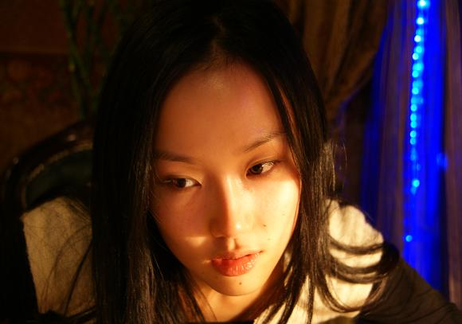
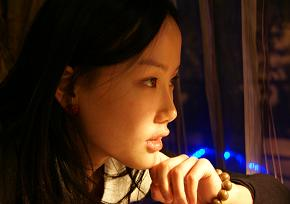
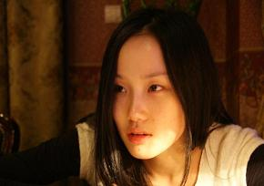
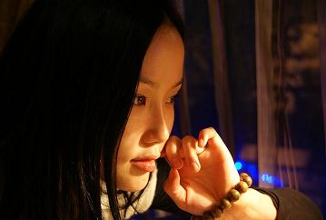
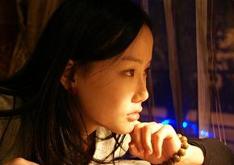
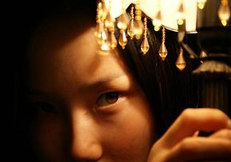
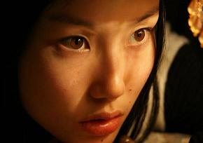
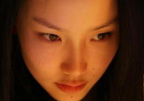

我在
北京工作，不过不想汇报工作，先写一篇星座吧
最近才开始研究星座，好象水瓶和双子最合？
我最好的两个女朋友是双子，两个都认识5年多，不工作的时候，我都会找她们出来吃饭聊天，不过现在大家都挺忙，即使长时间不见，碰到了还是可以彼此掏心掏肺的说任何事情，从来都不吵架哦，但不吵架肯定是我们水瓶脾气好，总是让着别人，哈哈。
我的声乐老师和老板也是双子，老师在上课的时候铁面无私，对我要求非常高，每次练声都出超多汗，还总是被骂，但下课了他就像爸一样疼我，烧各种好吃的东西，以前我还没有赚钱的时候，他知道我家境一般，就不收我的学费，有一次去香港工作，他还给我一个红包，说喜欢什么小东西自己买，真的不知道怎么报答他了。
老板就更有缘分了，一般情况下，和老板都会有距离感，而我老板在公司就像一个家长，对我而言，她就是个妈，我认为从她签我起，就已经为我想好了我一辈子的事情了，我爱这个妈，我希望跟着她一直走下去，哈！
还有《痒》《软绵绵》是双子座的孟楠创作的，我们彼此欣赏，哈哈
前短时间演《弘一法师》时认识了以为好朋友也是双子，我想他还不清楚自己到底喜欢男还是女的，这个也不重要，我喜欢教这样的朋友，人超好超可爱
邀请我去快乐大本营的编导也是双子，她比我着急100倍，恨不得让全国人民都认识我，一个80后的女生，工作起来就像一个成功的女强人，所以那节目很成功
对了，还有位同行好友，马海生，他生日是我发第一张唱片的日子哦，后来跟我同一个声乐老师学唱歌，所以是师弟，看着他比赛到现在也快3年了，他从来没有着急过，一直在学东西充实自己，性格很好超有礼貌，最近他终于发片了，为他高兴，希望他越来越好，也希望大家继续支持他
重点：我妈妈是双子，爸爸是水瓶，妈妈脾气超好，爸爸有点任性，两人结合的太好了。
还有好多好多。。。。不的不承认水瓶与双子太有缘分了





